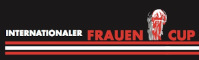

GP Crevoisier

Dimanche 24 mars 2024
Le GP Crevoisier est aux épreuves nationales ce que le GP La Marseillaise est au calendrier professionnel européen: la course qui lance les choses sérieuses. L'épreuve principale réunit les catégories nationales élites et amateurs. L'épreuve du VCFM, organisée pour la première fois en 2007, est également ouverte aux catégories nationales féminines et juniors. La course se déroule sur le circuit mythique de La Courtine (à l'est des Franches-Montagnes). La boucle fait 15 km, à parcourir plusieurs fois selon les catégories. Très roulant, le parcours est idéal pour lancer la saison. Il exige du rythme, sans être trop sélectif pour les coureurs encore en rodage. Les populaires de la région participent également à la fête en se mesurant lors d'une épreuve qui ouvre la route aux licenciés.
Chères amies et chers amis cyclistes,
Les indicateurs sont au vert et les organisateurs toujours aussi
motivés! Nous vous donnons donc rendez-vous fin mars sur le traditionnel
parcours du GP Crevoisier. Profitez donc de l‘occasion qui vous est
donnée de tester votre forme au début du printemps et de passer une
journée „en peloton“.
Nous nous réjouissons de vous accueillir nombreuses et nombreux.
D’ici-là, le VCFM souhaite à toutes et à tous, une belle saison
sportive!
Salutations amicales
Pascal Mercier, président du VCFM
Le GP Crevoisier fait partie de la "Primeo Energie - ASOC-Cup"
et de la "Coupe des femmes 2024" 
Informations générales
Organisation et information
Vélo-Club Franches-Montagnes:
Pascal Mercier
Case postale 2
2350 Saignelégier
Tél.: 079 217 27 30 ou 032 487 38 62
eMail: p_mercier@hispeed.ch
Sécurité et circulation:
Pascal Mercier (tél.: 079 217 27 30 ou 032 487 38 62)
eMail: p_mercier@hispeed.ch
Type de Manifestation
Le GP Crevoisier Tour de la Courtine est ouvert aux catégories suivantes:
- Populaires
- Hommes U19
- Femmes FE
- Femmes FB
- Hommes Amateurs/Masters
- Hommes Elites (nat.)
1ère manche de la Priméo Energie ASOC-Cup 2024
1ère manche de la coupe féminine internationale
Inscriptions
Prix: CHF 25.00 pour les élites / CHF 22.00 pour les amateurs / CHF
19.00 pour les Dames / CHF 18.00 pour les juniors / CHF 20.00 pour les
populaires.
Inscription et payement sur: Jean-Noël
Froidevaux (sur place avec un supplément de CHF 20.00, catégorie
populaire CHF 5.00).
Planche de prix
Selon Schéma 1 SwissCycling
Officiels de la course
Les officiels chargés d’assurer l’organisation générale et le bon déroulement de l’épreuve sont:
- le Directeur de l’organisation
- le Directeur technique
- le Responsable course
- les régulateurs à moto
Les officiels chargés d’assurer le contrôle règlementaire et l’arbitrage de la compétition en collaboration avec la Direction de l’épreuve sont:
- le Président du Collège des commissaires
- les commissaires nationaux désignés pour l’épreuve
- le juge aux arrivées
- les chronométreurs
Collège des Commissaires
Le Collège des commissaires comprend:
- le Président du Collège
- 4 commissaires nationaux
- un juge à l'arrivée
Le Collège prend connaissance des infractions relevées par les
commissaires et les officiels de l’épreuve, délibère en toute
indépendance et prononce les sanctions qu’il juge nécessaires, dans le
respect du présent règlement, de celui de l’UCI et de Swiss Cycling.
La voix du président est prépondérante. Toutes les décisions du Collège
sont immédiatement communiquées à la Direction de l’épreuve, laquelle
assume la charge de les porter à la connaissance des directeurs sportifs
dans les meilleurs délais.
Juge au arrivées
Le juge aux arrivées assure les classements intermédiaires et le classement à l’arrivée. En cas d’impossibilité, sa fonction peut être remplie par tout autre commissaire
Programme de la journée
- 09h15 réunion des directeurs sportifs FE (halle de gymnastique)
- 09h50 départ de la course ouverte à tous les populaires (licenciés ou non) sur 4 tours, soit 60km
- 10h00 départ de la course nationale junior U19 sur 6 tours, soit 90km
- 10h25 départ de la course nationale Féminines FE et FB sur 5 tours soit 75 km Course féminine par handicap selon règlement Swisscycling.
- 12h30 fin de la course
- 13h00 réunion des directeurs sportifs (halle de gymnastique)
- 13h30 résultats des courses du matin (halle de gymnastique)
- 14h00 départ de la course nationale ME/amateurs/masters sur 8 tours, soit 120km
- 17h00 fin de la course
- 17h45 résultats course amateurs/élites (halle de gymnastique)
Séance des Directeurs Sportifs (DS)
Femmes Élites: à 9h15
Hommes Élites: à 13h00
Lieu: Salle de gymnastique des Genevez (JU)
Les équipes comptant plus de 5 coureurs ou les équipes mixtes peuvent
suivre dans la course et doivent obligatoirement participer à la séance
des directeurs sportifs.
Lieu de départ et d'arrivée
Les Genevez (JU)
Permanence
La permanence se trouve Salle de gymnastique des Genevez (JU)
Radio-Tour
Fréquence Radio Tour: 159,825 Mhz
Dépannage neutre
Le service de course neutre est assuré par l’ASOC
Délai d’arrivée
Tout coureur arrivant dans un délai dépassant 8% du temps du vainqueur n'est plus retenu au classement. Le délai peut être augmenté en cas de circonstances exceptionnelles par le Collège des commissaires, en consultation avec l'organisateur.
Coureur doublé
Tout coureur lâché et doublé avant le début du dernier tour par les coureurs de tête est mis hors course et est classé conformément à sa position lors de sa mise hors course.
Chronométrage
A l’arrivée, tous les coureurs d’un même peloton sont crédités du même temps. À chaque coupure effective, le chronométreur enregistre un nouveau temps. Il officie jusqu’à l’arrivée du véhicule balai. Il enregistre également les temps des coureurs arrivés après les délais impartis et remet la liste, avec les temps correspondants, au Président du Collège des commissaires.
Le parcours
Parcours: Les Genevez – Le Prédame – Lajoux – Fornet-Dessous – Bellelay
– Les Genevez
Attention: circulation autorisée dans le sens de
la course.
Les coureurs doivent toujours suivre le parcours officiel.
L’emprunt de tout autre itinéraire, notamment de raccourcis, est
sanctionné. Par respect du public et pour sa sécurité, les coureurs ne
peuvent pas utiliser les trottoirs et les pistes cyclables. En cas de
changement d’itinéraire, la Direction de l’organisation en avise, au
moment du contrôle de départ, les directeurs sportifs et les coureurs.
Ces derniers ont l’obligation d’apposer leur signature sur le communiqué
leur signifiant la ou les modifications de parcours.
En cas d’accident ou d’incident exceptionnel risquant de fausser le
déroulement régulier de la course en général ou d’une étape en
particulier, le Directeur de l’organisation, après accord du Collège des
commissaires, peut à tout instant décider, après en avoir informé les
chronométreurs, soit:
- de modifier le parcours
- de déterminer une neutralisation temporaire de la course
- d’arrêter la course et donner un nouveau départ
- d’annuler la course
Le Président du Collège des commissaires, après consultation de l’organisateur, pourra quant à lui prendre les décisions sportives suivantes:
- annuler ou conserver les écarts acquis lors d’une neutralisation ou d’un arrêt de la course en tenant compte des écarts enregistrés au moment de l’incident
- annuler ou conserver les résultats acquis lors d’un sprint intermédiaire, d’un grand prix de la montagne ou dans les différents classements
- considérer une course comme non disputée
Téléchargements
Parcour
PDF-A4 / Parcour
GPX / Profil
Départ et feuille de signature
Les coureurs et leurs directeurs sportifs doivent être présents au lieu
de contrôle des signatures au moins 15 minutes avant l’heure du départ
du lieu de rassemblement.
La signature de la feuille de départ commence 1h et 10 minutes avant le
départ et prend fin 10 minutes avant l’heure du départ du lieu de
rassemblement. Sous peine de mise hors course, la signature de la
feuille de départ pour les coureurs est obligatoire.
Sur décision du Jury des commissaires, le contrôle des signatures peut
être modifié ou abrogé.
Après l’appel des coureurs, le départ réel, donné par le Directeur de
l’épreuve, s’effectue
• "lancé" : par l’organisation de l’épreuve, au « Km 0 ».
Ravitaillement et écologie
Les déchets ne peuvent être jetés qu’à proximité immédiate de la zone
de ravitaillement (zone de déchets). est signalée par des panneaux et
nettoyée par l’organisateur. En cas de non-respect de cette disposition,
le coureur sera sanctionné et/ou disqualifié, conformément aux
dispositions de l’article 2.2.025 du Règlement de l’UCI.
• d’une manière générale, le ravitaillement permanent est autorisé à
partir du panneau situé près du 30ème kilomètre et jusqu’au panneau
annonçant la fin du ravitaillement à 20 kilomètres de l’arrivée
• la Direction de l’épreuve peut, en accord avec le Collège des
commissaires, modifier ces modalités durant l’étape en fonction des
conditions climatiques ou de toute circonstance exceptionnelle
Afin de respecter l’environnement et dans un souci de sécurité, il est
interdit de se débarrasser d’aliments, de musettes, de bidons ou de tout
autre accessoire en dehors de la zone de récupération ou de tout autre
lieu prévu à cet effet.
Le port et l’usage de récipients en verre sont formellement interdits
Abandons
Tout coureur qui abandonne doit remettre ses dossards à l'officiel de
mise hors course ou au personnel de la voiture-balai.
Les dossards des coureurs ayant abandonné sont ensuite remis à l’arrivée
au commissaire qui assiste le chronométreur ou au juge arrivée.
Cérémonie protocolaire
Les trois coureurs les mieux classés par catégorie doivent être présents pour la cérémonie protocolaire à l’heure indiquée dans l’horaire
Infractions en course - Pénalités
L’aspiration et l’entrainement par un véhicule à moteur, la
"poussette", la "rétro poussette", la "tirette" et la prise d’appui sont
interdits en toutes circonstances. Les commissaires de course peuvent
exclure tout coureur surpris accrocher effectivement à un véhicule en
marche, sans préjudice de l’amende et de la suspension encourues.
Les obstructions volontaires et les manœuvres non règlementaires sont
défendues et pénalisées.
Toute autre infraction selon règlement Swisscycling art 2.12.007 sera
sanctionnée selon la tabelle applicable en la matière.
ANTIDOPING
Les dispositions antidopage de l’UCI et de Swiss Cycling s’appliquent
intégralement à la présente épreuve.
Le local pour les contrôles antidopage se situe : Salle de gymnastique
des Genevez
Vestiaires et douches
Halle de gymnastique dès 8h00
Remise des dossards
Halle de gymnastique dès 8h00 pour les courses du matin et dès 12h00
pour la course de l’après-midi
Le contrôle des licences et la remise des dossards s’effectuent jusqu’à
30 minutes avant le départ de la course concernée.
Parking
À proximité du départ / arrivée
Samaritains
A disposition dans l'aire de départ / arrivée
Restauration et boissons
Halle de gymnastique
Collège du Jury
Président du Jury: Dario Bassi
Membres du Jury:
Laurent Pitet
Andréa Marco Steiger
Edy Zellweger
Pascal Remo Ingold "ST"
Chronométrage
Assurances/ exclusion de responsabilité
L’organisateur décline toute responsabilité en cas d’accidents ou de
dommages matériels de tiers survenant avant, pendant et après la
manifestation. Chaque participant reconnaît l’exclusion de
responsabilité de l’organisateur en cas de dommages de toute nature.
Toute revendication de dommages et intérêts à l’encontre de sponsors, de
communes riveraines ou de l’organisateur en raison de dommages et de
blessures de toute nature est exclue. Chaque participant doit disposer
de sa propre assurance responsabilité civile.
Chaque participant déclare accepter que les données fournies lors de
l’inscription et les images et interviews réalisées dans le cadre de la
course soient publiées et diffusées à la radio, à la télévision, dans la
publicité, dans des livres, par des moyens de reproduction
photomécanique (film, cassettes vidéo, etc.), sans que ceci ouvre droit
à compensation
Résultats
2024 / 2023 / 2022 / 2019 / 2018 / 2017 / 2016 / 2015 / 2014 / 2013 / 2012 / 2011